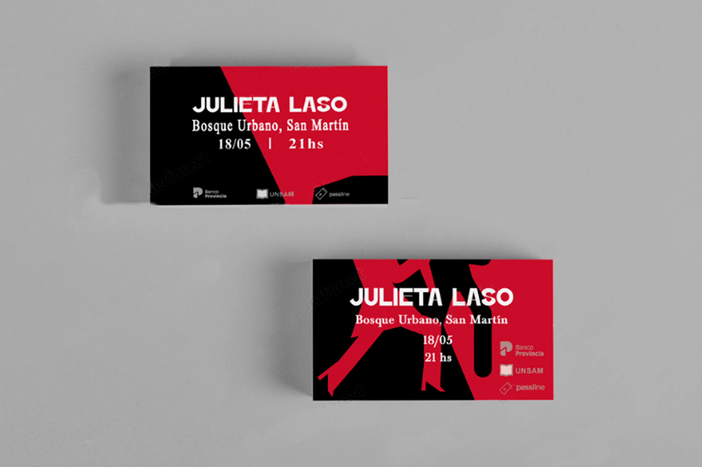
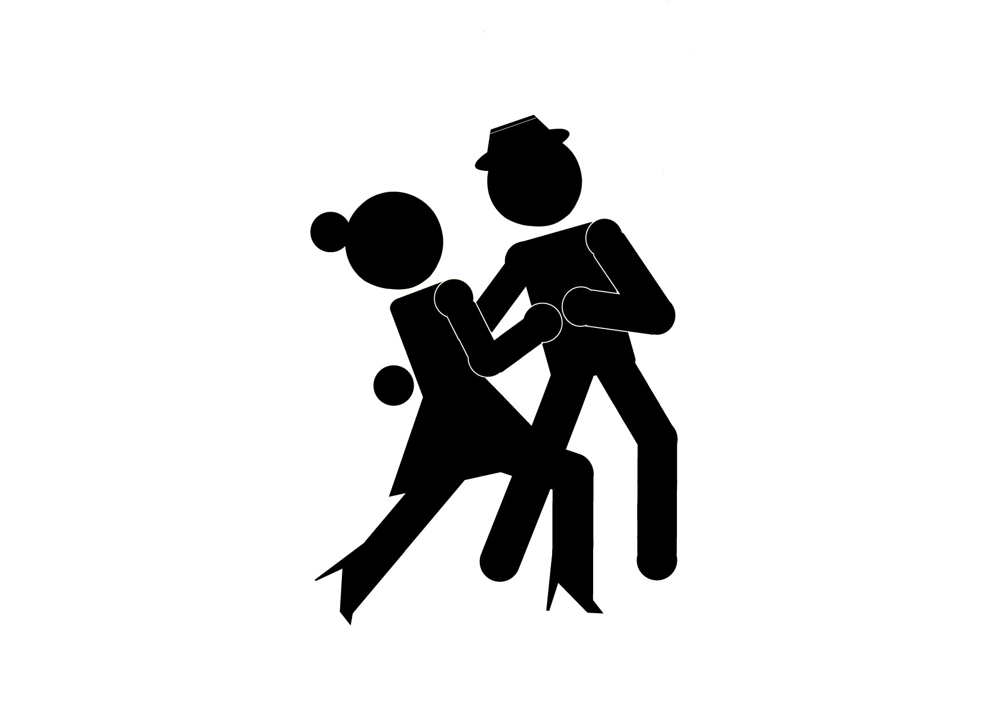

Lenguaje Visual



Esta materia fue una de las primeras cursadas en la carrera. El trabajo constó de realizar un afiche para una invitación a un evento musical. Primero realizamos 4 bocetos de diferentes estilos musicales utilizando únicamente formas geométricas y luego elegimos uno y creamos el afiche.